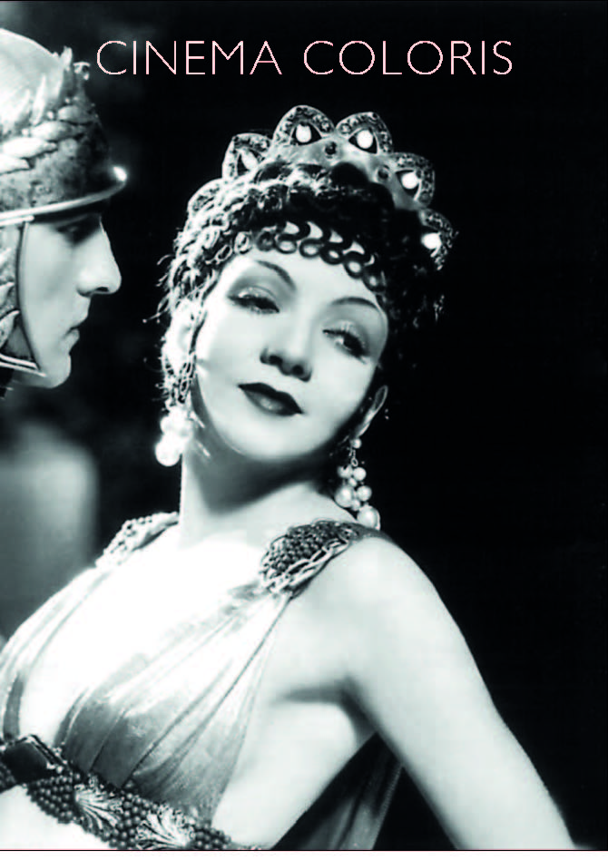

Pese a que un plano sea una unidad con significado propio, genera su mensaje en relación y como consecuencia de tantos otros, especialmente uno tan significativo como es el que cierra el film. El signo de la cruz (The sign of the Cross, Cecil B. DeMille, 1932, EEUU) arranca con el plano de una estatua del águila romana. Bajo su ala aparece la estrella anunciadora. Sobre esta va emergiendo una cruz, mostrando así el nacimiento del hijo de Dios bajo el seno del imperio, su castigo y la futura implantación de su doctrina. A su vez, el plano final representa el imparable inicio de la edificación de la Fe y sus consecuencias, donde el martirio en vida es un ascenso hacia la luz.
Avanzan decididos a unirse ante Dios y junto a Dios, esta es la imagen de una pareja subiendo al altar para unirse en sagrado matrimonio, el gesto de él cubriéndola con su capa mientras atraviesan el umbral así lo confirma. A partir de este momento, su amor y su Fe trascienden a las fauces de los leones. La puerta exterior se cierra tras su paso, pero esa luz cegadora y poseedora de la verdad sigue penetrando en la lúgubre estancia a través de los ornamentales huecos en forma de cruz. Finalmente, se cierra también la puerta interior, pero la luz que transmite el mensaje divino ha penetrado, proyectando así una gran cruz sobre la puerta.
Previamente, poco antes de subir, ella infunde valor sobre un niño para que afronte su fatal destino. Se cierra el gran portón, pero ella sigue dentro cuando este se cierra, llorando se posa sobre la puerta en una posición de crucifixión. El encuadre es similar al que se empleará en el plano final, a diferencia de que en este la cámara se sitúa más atrás y más baja, lo que impide ver la puerta que da a la arena y la luz que entra. La deslumbrante cruz final, pareciera ser una ensalzada impresión de la figura de ella. La escalera como elemento narrativo ya aparece en la secuencia en la que ella coincide con el general romano en la fuente. Les separa y une y les marca el camino a seguir.